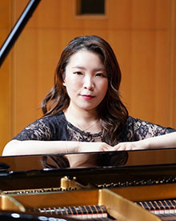

Biography
北九州市出身。3歳からピアノを始める。大分県立芸術文化短期大学音楽科ピアノ専攻卒業及び、同大学専攻科を首席で修了。
卒業、修了演奏会に出演。第16回九州・山口ジュニアピアノコンクール審査委員長賞受賞。第12回別府アルゲリッチ音楽祭大分県出身若手演奏家コンサート出演。
NHK交響楽団コンサートマスター篠崎史紀氏プロデュースMAROプロジェクト2012 6thに出演。第12回アジア国際音楽コンクールピアノ部門第3位。
ウィーン国立音楽大学リストザールにて開催された受賞者コンサートに出演。
これまでにピアノを市川馨子、片山順子、故 若松啓子、田中星治、黒川浩の各氏に師事。
現在九州を中心にソロ、室内楽、伴奏など幅広く活動する。
Live / Tour
| Date | Venue | Title |
|---|---|---|
| 2025.11.01(Sat) | 東京 ZEPP SHINJUKU | ARTIST NAME TOUR 2025 "AWAKENING" |
| 2025.11.15(Sat) | 大阪 なんばHatch | ARTIST NAME TOUR 2025 "AWAKENING" |
| 2025.12.01(Mon) | 福岡 DRUM LOGOS | ARTIST NAME TOUR 2025 "AWAKENING" |